Wer war hier?
33 Tiere aus deutschen Wäldern, erkannt am Foto, an der Spur und an dem, was sie hinterlassen.
Jetzt im November unterwegs
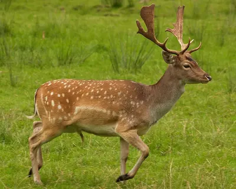
DamhirschDie Brunft der Damhirsche liegt im Oktober und November.Hirsch mit weiß gepunktetem Sommerfell und schaufelförmigem Geweih.Foto: Johann-Nikolaus Andreae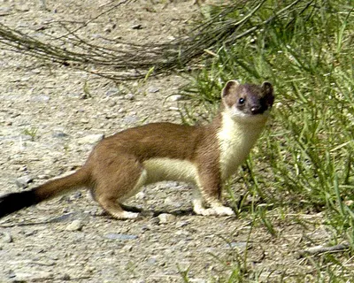
HermelinIm Winter tragen viele Hermeline ein weißes Fell.Kleiner, flinker Jäger mit schwarzer Schwanzspitze, im Winter oft weiß.Foto: James Lindsey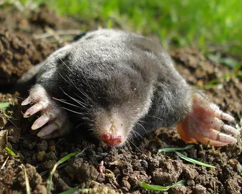
MaulwurfIm Frühjahr und Herbst wirft er besonders viele Hügel auf.Samtschwarzer Gräber mit Schaufelhänden, der fast nur unter der Erde lebt.Foto: Mick E. Talbot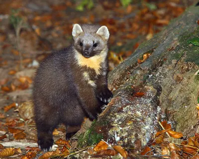
BaummarderIm Sommer ist Ranzzeit, dann sind die Marder auch in der Dämmerung unterwegs.Geschickter Kletterer mit dottergelbem Kehlfleck, der fast nur im Wald lebt.Foto: Dani Kropivnik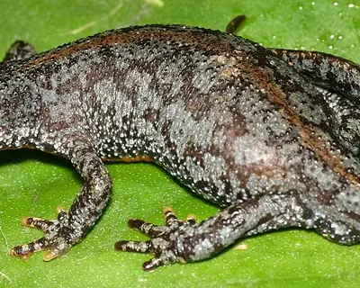
BergmolchIm April und Mai tragen die Männchen ihr blaues Wasserkleid.Molch mit leuchtend orangem Bauch, das Männchen im Frühjahr blau.Foto: Christian R. Linder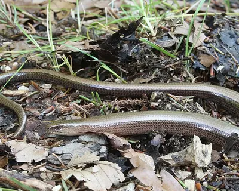
BlindschleicheNach Regen im Frühsommer ist sie oft auf Wegen unterwegs.Beinlose Echse mit glänzenden Schuppen, keine Schlange.Foto: Holger Krisp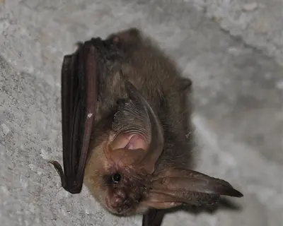
Braunes LangohrIn warmen Sommernächten jagt es zwischen Baumkronen.Fledermaus mit riesigen Ohren, fast so lang wie der Körper.Foto: Fourrure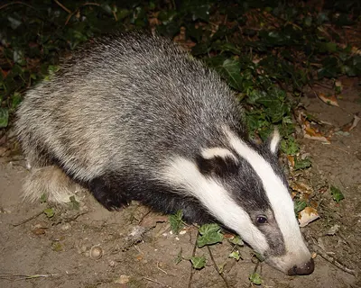
DachsIm Frühsommer verlassen die Jungen erstmals den Bau.Kräftiger Grabkünstler mit schwarz-weiß gestreiftem Gesicht.Foto: BadgerHero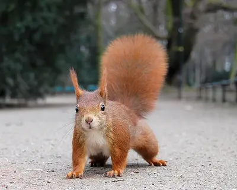
EichhörnchenIm Herbst legen Eichhörnchen emsig Vorräte an.Flinker Kletterer mit buschigem Schwanz, der im Herbst Nüsse vergräbt.Foto: Ray eye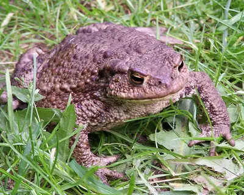
ErdkröteIm März und April wandern die Kröten zu ihren Laichgewässern.Plumpe, warzige Kröte, die jedes Frühjahr zu ihrem Geburtsteich wandert.Foto: Iric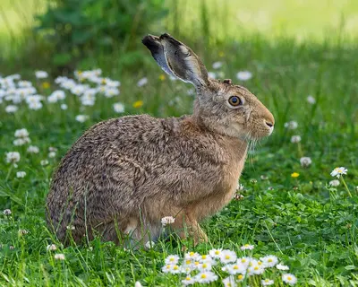
FeldhaseIm Februar und März boxen die Hasen auf den Feldern.Schneller Läufer mit sehr langen Ohren mit schwarzer Spitze.Foto: Bengt Nyman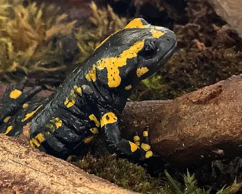
FeuersalamanderIn regnerischen Nächten im Frühjahr und Herbst ist er am häufigsten unterwegs.Schwarz-gelber Lurch der feuchten Laubwälder, unterwegs nach warmem Regen.Foto: Michael Linnenbach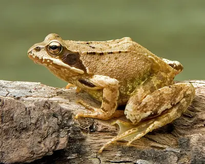
GrasfroschSchon im Februar und März laicht er als einer der ersten.Brauner Frosch mit dunklem Fleck hinter dem Auge, oft weit vom Wasser im Wald.Foto: Richard Bartz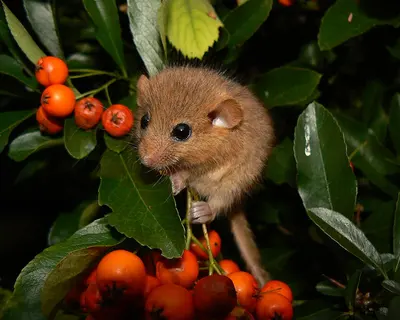
HaselmausIm Spätsommer verraten angenagte Haselnüsse die Haselmaus.Winziger, orangebrauner Bilch mit großen Augen und Kugelnest im Gebüsch.Foto: Danielle Schwarz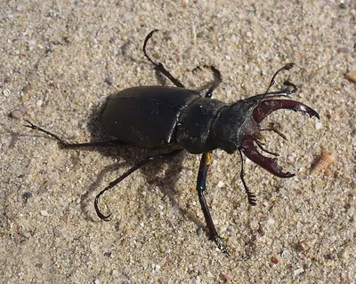
HirschkäferIm Juni fliegen die Männchen an warmen Abenden.Größter Käfer Europas, das Männchen mit geweihartigen Kiefern.Foto: George Chernilevsky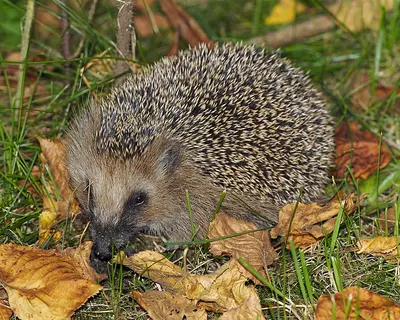
IgelIm Spätsommer sind die Jungigel unterwegs und fressen sich Fettreserven an.Stacheliger Insektenfresser, der nachts schmatzend durch Laub und Gärten zieht.Foto: Jörg Hempel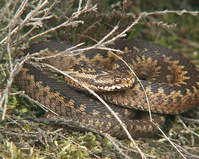
KreuzotterIm Frühjahr sonnt sie sich lange an Waldrändern und in Mooren.Unsere einzige verbreitete Giftschlange, mit Zickzackband auf dem Rücken.Foto: Piet Spaans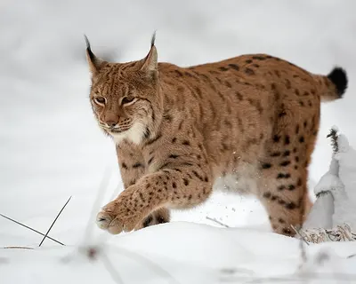
LuchsIm Februar und März ist Ranzzeit, die Spuren im Schnee sind dann am ehesten zu finden.Größte Katze Europas mit Pinselohren und kurzem Stummelschwanz.Foto: Martin Mecnarowski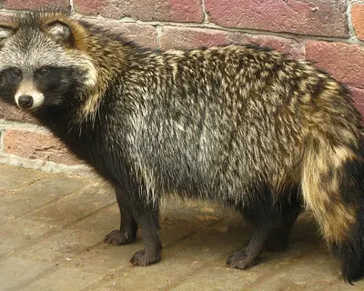
MarderhundIm Frühsommer sind die Familien mit Welpen unterwegs.Hundeartiger Einwanderer aus Ostasien, der aussieht wie ein Waschbär ohne Ringelschwanz.Foto: Доктор рукиноги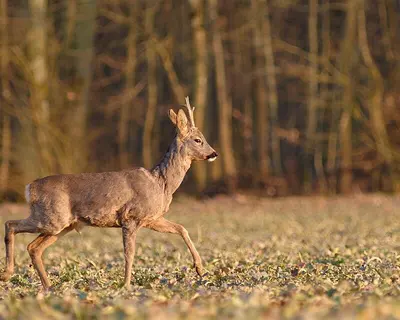
RehIm Frühjahr äsen Rehe auf frischen Wiesen, im Juli und August ist Brunft.Kleinster Hirsch bei uns, mit hellem Fleck am Hinterteil und ohne sichtbaren Schwanz.Foto: Sylvouille at French Wikipedia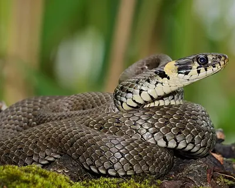
RingelnatterIm Frühsommer ist Paarungszeit, die Nattern sonnen sich dann oft.Harmlose Wasserschlange mit gelben Halbmonden am Hinterkopf.Foto: Andreas Eichler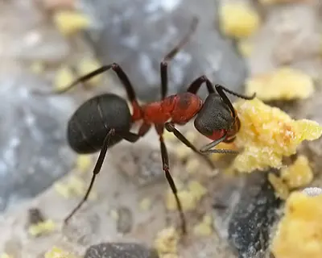
Rote WaldameiseIm Frühjahr sonnen sich die Ameisen in Klumpen auf dem Hügel.Baumeisterin der großen Nadelhügel im Wald, Gesundheitspolizei des Waldes.Foto: Richard Bartz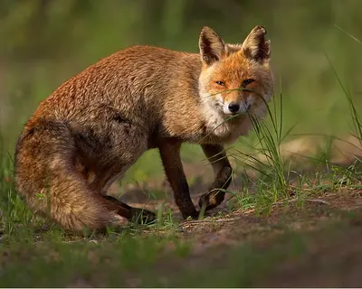
RotfuchsIm Januar und Februar bellen die Füchse in der Ranzzeit, im Mai und Juni spielen die Jungen vor dem Bau.Rotbrauner Räuber mit buschigem Schwanz und weißer Schwanzspitze.Foto: Martin Mecnarowski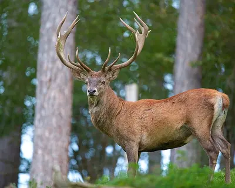
RothirschIm September und Oktober röhren die Hirsche während der Brunft.Unser größtes Wildtier, berühmt für sein Röhren in der Herbstbrunft.Foto: Lviatour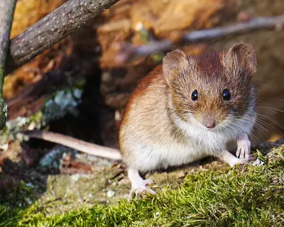
RötelmausIm Herbst ist ihre Zahl am größten.Häufigste Maus im Wald, mit rotbraunem Rücken und kurzem Schwanz.Foto: Christian Schulz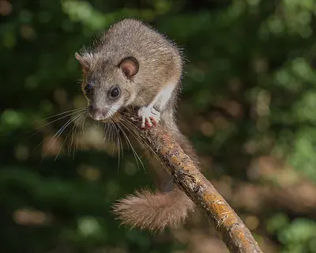
SiebenschläferIm Hochsommer sind Siebenschläfer am aktivsten und oft laut zu hören.Grauer Bilch mit buschigem Schwanz, der rund sieben Monate Winterschlaf hält.Foto: Herwig Winter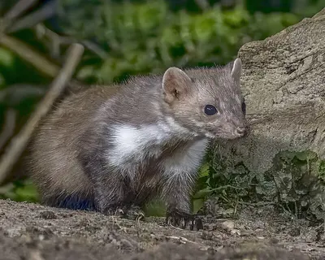
SteinmarderIm Sommer, der Ranzzeit, poltern Steinmarder besonders laut auf Dachböden.Der Marder vom Dachboden, mit weißem, gegabeltem Kehlfleck.Foto: Charles J. Sharp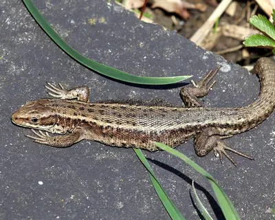
WaldeidechseIm Frühjahr sonnen sich die Eidechsen besonders ausgiebig.Kleine, braune Eidechse, die lebende Junge zur Welt bringt.Foto: Charles J. Sharp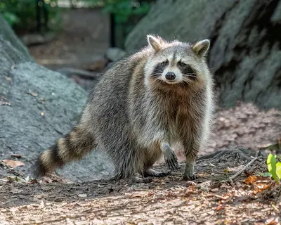
WaschbärIm Sommer sind die Mütter mit ihren Jungen unterwegs.Eingewanderter Kletterkünstler mit schwarzer Gesichtsmaske und geringeltem Schwanz.Foto: Rhododendrites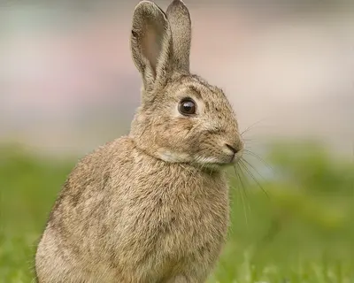
WildkaninchenVon Frühjahr bis Sommer sind die Kolonien mit vielen Jungen am lebhaftesten.Geselliger Gräber, kleiner als der Hase, mit kürzeren Ohren.Foto: JJ Harrison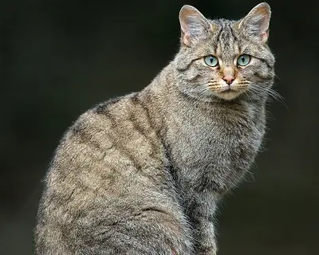
WildkatzeIm Frühjahr sind die Katzen auf der Suche nach Nahrung für ihre Jungen auch tagsüber unterwegs.Scheue Waldkatze mit buschigem Schwanz und stumpfem, schwarzem Ende.Foto: Lviatour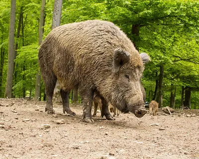
WildschweinVon März bis Mai sind die gestreiften Frischlinge unterwegs.Kräftiges, dunkles Borstentier, das in Gruppen den Waldboden umpflügt.Foto: Superbass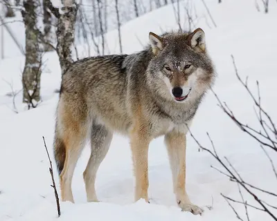
WolfIm Winter sind Spuren im Schnee am leichtesten zu finden.Wildes Vorbild des Haushunds, lebt in Familienrudeln und ist sehr scheu.Foto: Mas3cf
Arten
-
 nachtaktiv
nachtaktiv -
 nachtaktiv
nachtaktiv -
 dämmerungsaktiv
dämmerungsaktiv -
 nachtaktiv
nachtaktiv -
 nachtaktiv
nachtaktiv -
 dämmerungsaktiv
dämmerungsaktiv -
 tagaktiv
tagaktiv -
 dämmerungsaktivnachtaktiv
dämmerungsaktivnachtaktiv -
 dämmerungsaktivnachtaktiv
dämmerungsaktivnachtaktiv -
 nachtaktiv
nachtaktivFeuersalamander
AmphibienSchwarz-gelber Lurch der feuchten Laubwälder, unterwegs nach warmem Regen.
-
 dämmerungsaktivnachtaktiv
dämmerungsaktivnachtaktiv -
 nachtaktiv
nachtaktiv -
 tagaktivnachtaktiv
tagaktivnachtaktiv -
 dämmerungsaktiv
dämmerungsaktiv -
 nachtaktiv
nachtaktiv -
 tagaktiv
tagaktiv -
 dämmerungsaktivnachtaktiv
dämmerungsaktivnachtaktiv -
 nachtaktiv
nachtaktivMarderhund
RaubtiereHundeartiger Einwanderer aus Ostasien, der aussieht wie ein Waschbär ohne Ringelschwanz.
-
 tagaktivnachtaktiv
tagaktivnachtaktiv -
 dämmerungsaktiv
dämmerungsaktiv -
 tagaktiv
tagaktiv -
 tagaktiv
tagaktiv -
 dämmerungsaktivnachtaktiv
dämmerungsaktivnachtaktiv -
 dämmerungsaktivnachtaktiv
dämmerungsaktivnachtaktiv -
 tagaktivnachtaktiv
tagaktivnachtaktiv -
 nachtaktiv
nachtaktivSiebenschläfer
KleinsäugerGrauer Bilch mit buschigem Schwanz, der rund sieben Monate Winterschlaf hält.
-
 nachtaktiv
nachtaktiv -
 tagaktiv
tagaktiv -
 nachtaktiv
nachtaktivWaschbär
RaubtiereEingewanderter Kletterkünstler mit schwarzer Gesichtsmaske und geringeltem Schwanz.
-
 dämmerungsaktiv
dämmerungsaktiv -
 dämmerungsaktivnachtaktiv
dämmerungsaktivnachtaktiv -
 dämmerungsaktivnachtaktiv
dämmerungsaktivnachtaktiv -
 dämmerungsaktivnachtaktiv
dämmerungsaktivnachtaktiv
Kein Tier passt zu deiner Suche oder Auswahl.
Gut ausgerüstet in den Wald
Alle Empfehlungen ansehen-
 Foto: Jacek HalickiUnser Tipp
Foto: Jacek HalickiUnser TippCelestron Nature DX 8x42
Celestron
Helles Einsteigerglas für die Dämmerung: 8-fache Vergrößerung, wasserdicht und leicht genug für lange Ansitze.
Bei Amazon ansehen Celestron Nature DX 8x42 (Werbelink, öffnet in neuem Fenster) -
 Foto: DYVERUnser Tipp
Foto: DYVERUnser TippWildkamera mit Nachtsicht
Auswahl bei Amazon
Zeigt dir, wer nachts am Bau oder an der Futterstelle vorbeikommt. Achte auf unsichtbares Infrarot (No-Glow), damit die Tiere nicht gestört werden.
Bei Amazon ansehen Wildkamera mit Nachtsicht (Werbelink, öffnet in neuem Fenster) -
 Foto: Vitaly V. Kuzmin
Foto: Vitaly V. KuzminWärmebildkamera für Naturbeobachtung
Auswahl bei Amazon
Zeigt warme Tierkörper auch in völliger Dunkelheit und hinter dünnem Gebüsch. So entdeckst du Reh, Fuchs oder Dachs, ohne Licht zu machen.
Bei Amazon ansehen Wärmebildkamera für Naturbeobachtung (Werbelink, öffnet in neuem Fenster) -
 Foto: jd
Foto: jdStirnlampe mit Rotlicht
Auswahl bei Amazon
Rotes Licht blendet Tiere kaum und schont deine Nachtsicht, ideal für Kröten- und Salamanderabende.
Bei Amazon ansehen Stirnlampe mit Rotlicht (Werbelink, öffnet in neuem Fenster) -
 Foto: Dat dorisUnser Tipp
Foto: Dat dorisUnser TippBestimmungsbuch Tierspuren
Auswahl bei Amazon
Ein Spurenführer mit Zeichnungen der Trittsiegel in Originalgröße hilft draußen beim Vergleichen.
Bei Amazon ansehen Bestimmungsbuch Tierspuren (Werbelink, öffnet in neuem Fenster) -
 Foto: Gormo
Foto: GormoModellgips für Spurenabdrücke
Auswahl bei Amazon
Mit etwas Gips hältst du ein Trittsiegel aus dem Matsch dauerhaft fest. Ein schönes Projekt für Kinder und Spurensammler.
Bei Amazon ansehen Modellgips für Spurenabdrücke (Werbelink, öffnet in neuem Fenster) -
 Foto: KENPEI
Foto: KENPEIEinschlaglupe 10-fach
Auswahl bei Amazon
Für Fraßspuren an Nüssen und Zapfen: Zahnspuren werden mit der Lupe eindeutig.
Bei Amazon ansehen Einschlaglupe 10-fach (Werbelink, öffnet in neuem Fenster) -
 Foto: 14GTR
Foto: 14GTRIgelhaus für den Garten
Auswahl bei Amazon
Ein geschützter Platz für den Winterschlaf. Stelle es an eine ruhige, schattige Stelle unter Hecken oder Laub.
Bei Amazon ansehen Igelhaus für den Garten (Werbelink, öffnet in neuem Fenster)
Werbelink: Wenn du über diesen Link etwas kaufst, erhält der Waldtierkompass eine kleine Provision von Amazon. Für dich ändert sich am Preis nichts. Als Amazon-Partner verdiene ich an qualifizierten Verkäufen.
Weiter entdecken
- Spuren lesenTrittsiegel von Huftieren, Hunden, Katzen und Mardern, dazu Fraßspuren an Nüssen und Zapfen.
- Doppelgänger unterscheidenReh oder Rothirsch, Baum- oder Steinmarder: 16 Vergleiche mit den entscheidenden Merkmalen.
- Das WaldjahrBrunft, Krötenwanderung, Winterschlaf: was im Wald wann passiert, Monat für Monat.
- AusrüstungFernglas, Wildkamera, Rotlicht-Lampe und Spurenbuch für Beobachtungen in der Dämmerung.
- Vögel im Wald?Specht, Eichelhäher und Co. findest du auf der Schwesterseite Vogelkompass.